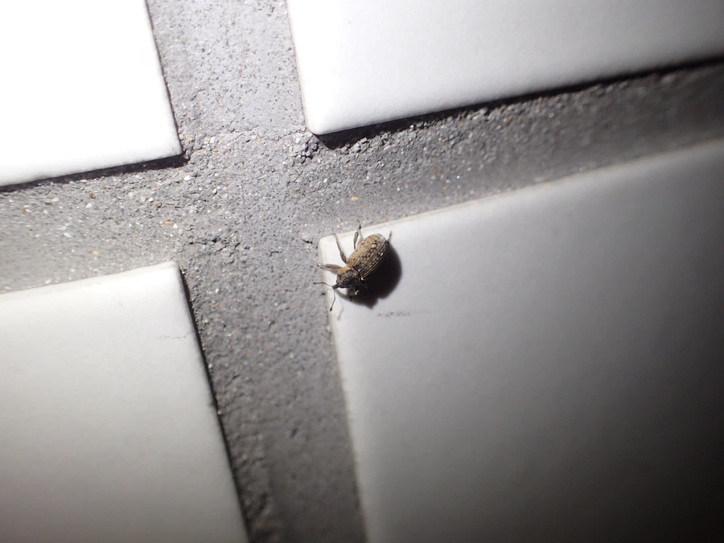

昆虫 · 动物界
稻象甲 Echinocnemus squameus

体灰褐、密布鳞毛的小型象甲，成虫啃食稻叶、幼虫在土中蛀食稻根，是水稻田常见的地下害虫。
- 分类
- 门节肢动物门纲昆虫纲目鞘翅目科象甲科属稻象甲属
- 栖息环境
- 水稻田、秧田、稻桩与沟渠边草丛
- 地理分布
- 中国南北稻区及日本、朝鲜半岛、东南亚
- 保护级别
- 常见水稻害虫，无保护需求
物种志
稻象甲的成虫体长约五毫米，体灰褐至黑褐色，体表密布灰白色鳞毛，前胸背板两侧有淡色纵纹，鞘翅上有排列整齐的刻点行。头部前端延伸成短喙，触角生于喙上，呈膝状，这是象甲类的共同特征。幼虫体白而弯曲，无足，头部黄褐，生活在稻根附近的泥土中，把根茎蛀成孔道。
它分布于中国南北稻区以及日本、朝鲜半岛和东南亚，栖息在水稻田、秧田和沟渠边的草丛。成虫白天躲在稻丛基部，夜间爬出啃食稻叶，把叶片咬出成排的小孔，严重时叶尖枯黄。幼虫在土中蛀食稻根，造成稻株生长不良、倒伏。它以成虫或幼虫在稻桩和土中越冬，一年发生一代。防治以灌水灭蛹、清除田边杂草和成虫盛发期施药为主。
形态与习性
- 体长约五毫米，体灰褐
- 体表密布灰白鳞毛，鞘翅有刻点行
- 喙头部延伸成短喙，触角膝状
- 成虫危害夜间啃食稻叶，咬出成排小孔
- 幼虫危害在土中蛀食稻根，致倒伏
- 防治灌水灭蛹、清除田边杂草
趣味知识
- 它有一根短短的象鼻，其实是延长的头部，触角就长在鼻尖上。
- 稻叶上成排的小孔是它夜里咬出来的，白天它躲在稻丛根部。
- 它的幼虫躲在土里啃稻根，稻子看着发黄却找不到虫，多半就是它。